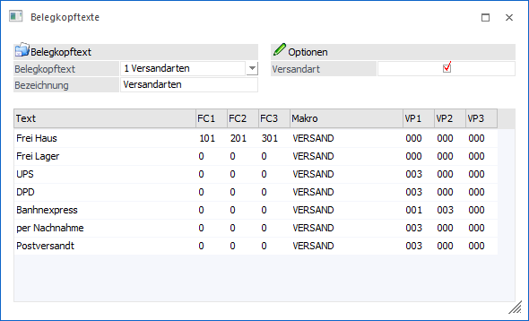
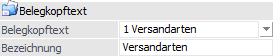
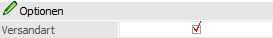
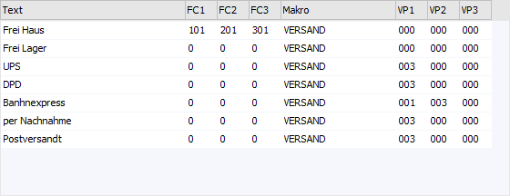
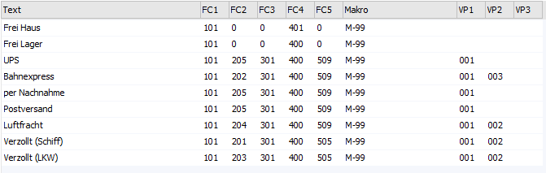
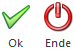

Im Menüpunkt…
1 WinLine FAKT
1 Stammdaten
1 Belegstammdaten
1 Belegkopftexte
… können die Texte bzw. Bezeichnungen für die 4 frei zu definierenden Belegkopftexte hinterlegt werden.
Hinweis
Im Personenkontenstamm (Register "FAKT") können Belegkopftexte fest zugeordnet werden. Eine individuelle Änderung pro Beleg wird hierbei natürlich gewährleistet (Register "Text").

Belegkopftext

Ø Belegkopftext
Aus der Auswahlliste wird der zu editierende Belegkopftext ausgewählt.
Ø Bezeichnung
An dieser Stelle kann dem Belegkopftext eine bis zu 20stellige, alphanumerische Bezeichnung zugeordnet werden.
Optionen

Ø Versandart
Diese Option kann nur bei einem der 4 Belegkopftexte aktiviert werden! Wenn die Checkbox aktiviert wurde, so stehen in der Tabelle 3 zusätzliche Spalten zur Verfügung, in welchen man Verpackungsarten zur Ermittlung der Versandregel (Kommissionierung) angeben kann.
Tabelle "Texte"

In der Tabelle werden die Auswahlen für die Belegkopftexte hinterlegt.
Ø Text
An dieser Stelle wird der Text für die Auswahl hinterlegt.
Ø FC1 bis FC3
In diesen Spalten können pro Text bis zu 3 Funktionscodes zugeordnet werden. Diese Funktionscodes werden für die Intrastat verwendet.
Ø FC4 bis FC5
In diesen Spalten können in Mandanten mit dem Länderkennzeichen "Deutschland" pro Text bis zu 2 Funktionscodes zugeordnet werden, die für die ATLAS-Ausfuhr-Schnittstelle benötigt werden.

Hinweis zu den Funktionscodes FC1 bis FC5
Die zur Verfügung stehenden Funktionscodes werden im Programm "Funktionscodes" (WinLine FAKT - Stammdaten) angelegt und gewartet. Nähere Informationen bezüglich Intrastat oder ATLAS-Ausfuhr entnehmen Sie bitte dem Kapitel "Funktionscodes".
Ø Makro
In der Spalte "Makro" kann pro Auswahl ein Makro eingegeben werden. Dieses Makro wird zusätzlich zum Belegendmakro im Beleg verwendet, wenn der entsprechende Belegkopftext ausgewählt wird (Register "Text" in der Belegerfassung)
Hinweis
Diese Belegkopftext-Makros werden vor dem Belegendmakro ausgeführt.
Ø VP1 bis VP3
Wurde die Option "Versandart" aktiviert, so können in diesen Spalten die Verpackungsarten zur Ermittlung der Versandregel (Kommissionierung) angeben werden. Dabei stehen die angelegten Verpackungsarten, der Eintrag "aus Collistamm" sowie die Auswahl "keine" zur Verfügung.
Aus der Kombination Colli und Versandart ergibt sich eine Versandregel, welche im Beleg gespeichert wird.
Beispiel 1
Hinterlegung der Verpackungsarten im Belegkopftext: Karton (001) + aus Collistamm ( ) + aus Collistamm ( )
Hinterlegung der Verpackungsarten im Collistamm: Kiste (002) + Gitterbox (003) + LKW (004)
Ergibt eine Versandregel von: Karton (001) + Gitterbox (003) + LKW (004)
Beispiel 2
Hinterlegung der Verpackungsarten im Belegkopftext: aus Collistamm ( ) + keine (000) + keine (000)
Hinterlegung der Verpackungsarten im Collistamm: Kiste (002) + Gitterbox (003) + LKW (004)
Ergibt eine Versandregel von: Kiste (002)
Tabellenbuttons

Ø Ausgabe Excel
Durch Anwahl des Buttons "Ausgabe Excel" wird der Inhalt der Tabelle an Microsoft Excel übergeben.
Ø Tabelleneinstellungen speichern
Die Spalten einer Tabelle können grundsätzlich an beliebige Positionen verschoben, bzw. in der Breite entsprechend angepasst werden. Durch Anwahl des Buttons "Tabelleneinstellungen speichern" werden die Einstellungen benutzerspezifisch gespeichert und bei dem nächsten Aufruf des Programmpunktes wieder vorgeschlagen.
Ø Gesamteinstellungen speichern
Im Gegensatz zu "Tabelleneinstellungen speichern" können mit "Gesamteinstellungen speichern" mehrere Tabellenaufbauten gespeichert und nach Wunsch geladen werden. Zusätzlich werden Sonderfunktionen der Tabelle (z.B. "Spalte gruppieren") ebenfalls bei der Speicherung bedacht.
Buttons

Ø Ok
Durch Anwahl des Buttons "Ok" bzw. der Taste F5 werden die Eingaben gespeichert.
Ø Ende
Durch Drücken des Buttons "Ende" bzw. der Taste ESC wird das Fenster geschlossen und alle nicht gespeicherten Eingaben verworfen.